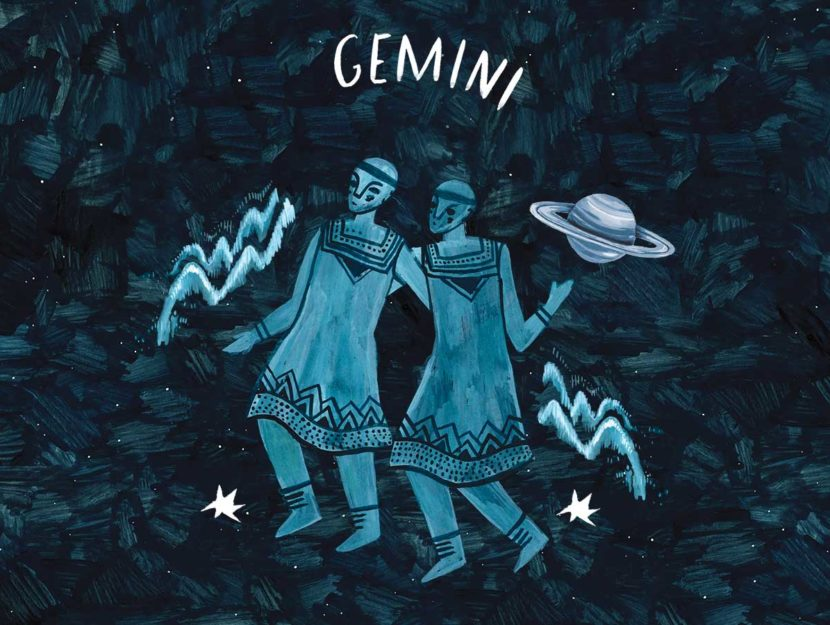

Date:
April 20-May 21
About:
Taurus is an earth sign represented by the bull.
Like their celestial spirit animal, Taureans enjoy relaxing in serene, bucolic environments, surrounded by soft sounds, soothing aromas, and succulent flavors.
Taurus is ruled by Venus, the enchanting planet that governs love, beauty, and money.
Compatibility:
Cancer, Virgo, Capricorn, and Pisces
Gemini
Date:
May 21-June 21
About:
Gemini traits are more varied than those of other astrological signs.
While most signs have one very prominent trait, Geminis can be social, talkative, and whimsical, but they can also be indecisive or nosy.
Compatibility:
Aries, Leo, Libra and Aquarius

Cancer
Date:
June 21- July 22
About:
Defensive at apparently illogical times, Cancer is still one of the most loving, open Zodiac signs.
The innate 'Crabby' tendency at unpredictable moments only adds to the fun. Cancer is a receptive and highly sensitive sign, capable of huge empathy.
Compatibility:
Taurus, Virgo, Scorpio and Pisces
Leo
Date:
July 23-August 22
About:
Leos are renowned for their stability, loyalty, and consistency.
They are dedicated friends and lovers who put their heart into every relationship.
Compatibility:
Aries, Gemini, Libra and Sagittarius
Virgo
Date:
August 23-September 22
About:
Virgos are complex creature of nature that desire to love and be loved.
Virgos are known for their nurturing and rule-abiding behavior.
Compatibility:
Taurus, Cancer, Scorpio and Capricorn
Libra
Date:
September 23-October 22
About:
Libras love harmony, security and beauty.
The Libra is very sensitive and tender and you need to have lasting relationships.
The Libra has great charm and knows that they can use it to get what they want in life.
Compatibility:
Gemini, Leo, Sagittarius and Aquarius
Scorpio
Date:
October 23-November 21
About:
Scorpios are often mysterious people because their true feelings run so deep and they keep their emotions hidden.
They also like to uncover things under the surface of others and are very intuitive.
Compatibility:
Cancer, Virgo, Capricorn and Pisces
Sagittarius
Date:
November 22-December 21
About:
Represented by the archer, Sagittarians are always on a quest for knowledge.
The last fire sign of the zodiac, Sagittarius launches its many pursuits like blazing arrows,
chasing after geographical, intellectual, and spiritual adventures.
Compatibility:
Aries, Leo, Libra and Aquarius
Capricorn
Date:
December 22-January 19
About:
Capricorns are sensitive but stoic. They're loving but have difficulty showing affection.
They're reserved but sardonic with a great sense of humor. They're cool-headed and great crisis managers.
In addition to that, they're committed to their families and friends, as well as to their careers.
Best of all, Capricorn traits include the power to achieve whatever they set their minds to.
Compatibility:
Taurus, Virgo, Scorpio and Pisces